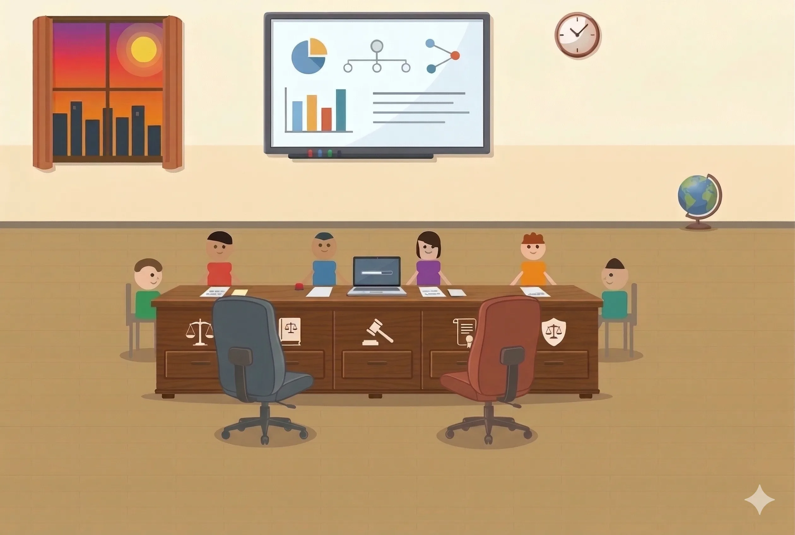
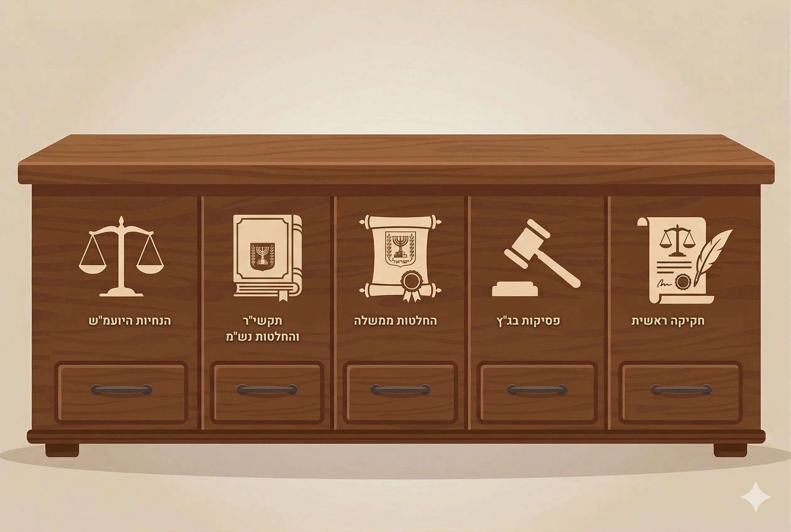
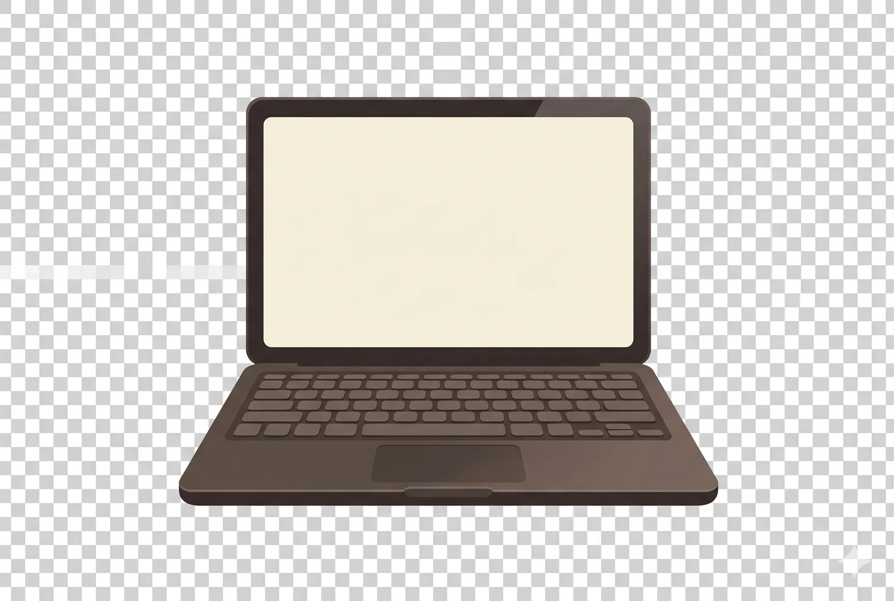
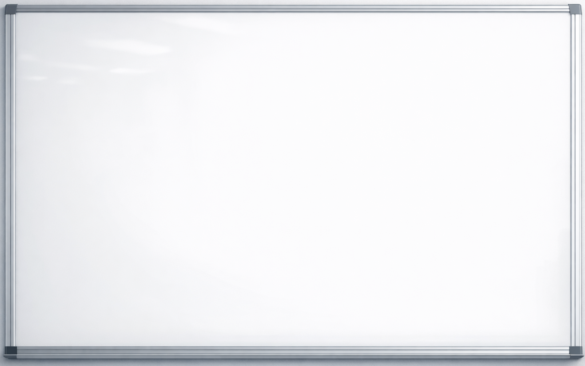
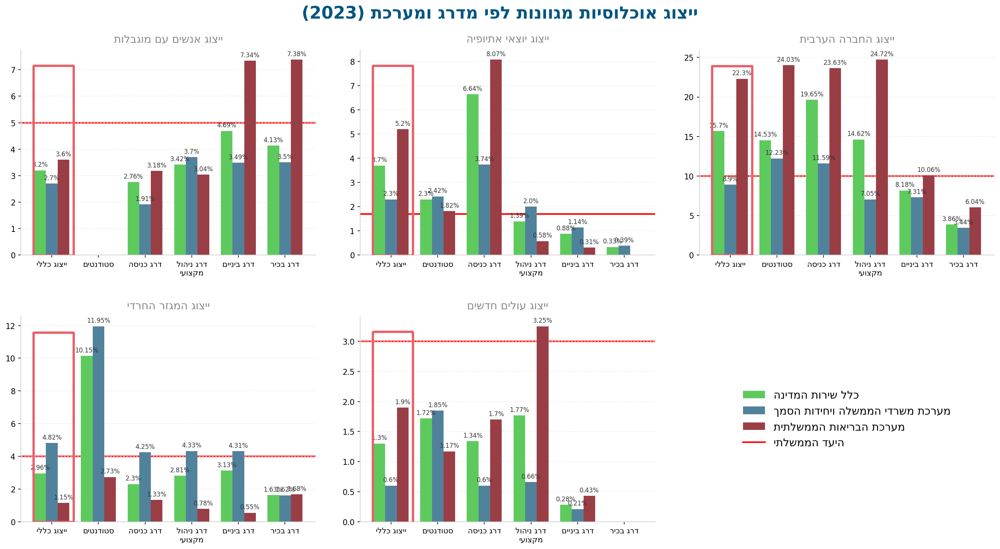
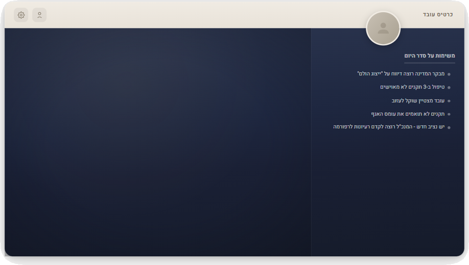

החוויה מעוצבת למחשב. על מסך קטן - חוויה חלקית.
×

+
−
💬
שאלו אותי

← חזרה לחדר
← חזרה לחדר

← חזרה לחדר
← חזרה לחדר
← חזרה לחדר

👇 גלגלו למטה כדי לראות מגמות בנתוני ייצוג הולם 👇
מקורות: נציבות שירות המדינה (מאי 2024).
דוח גיוון וייצוג בשירות המדינה לשנת תשפ"ב-תשפ"ג, 2023
❯ נציבות שירות המדינה.
דשבורד אוכלוסיות גיוון - מערכת אמו"ן
, נתוני 2024. כניסה אחרונה ב-3 באפריל 2026.
👇 גלגלו למטה כדי לראות מגמות בנתוני ייצוג הולם 👇

מקור: נציבות שירות המדינה (מאי 2024).
דוח גיוון וייצוג בשירות המדינה לשנת תשפ"ב-תשפ"ג, 2023
← חזרה לנתונים
← חזרה ללוח
← חזרה ללוח
← חזרה ללוח
← חזרה ללוח
← חזרה לחדר
← חזרה לחדר
← חזרה לחדר
← חזרה לחדר
← חזרה לחדר
← חזרה לחדר

👆
לחצו להנחיות
← סגור כרטיס